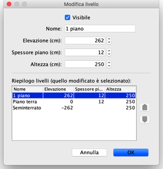

È possibile modificare la visibilità, il nome, l'elevazione e l'altezza di un livello facendo doppio clic
nella sua scheda o scegliendo Piano > Livelli > Modifica livello... dal menù.
Il pannello di modifica di un livello ti permette di modificare i suoi attributi, ma mostra anche una tabella
che descrive tutti i livelli di una casa in cui la linea selezionata corrisponde al livello attualmente modificato.

Lo spessore del pavimento viene utilizzato per calcolare il bordo verticale attorno a un pavimento nella vista 3D.
Questa superficie è visibile intorno ai fori nel pavimento e al bordo di un soppalco o di un balcone.
L'elevazione di un livello può essere positiva o negativa. In quest'ultimo caso, il terreno sarà automaticamente scavato nella vista 3D
ogni volta che un mobile, una stanza o un insieme di muri chiusi viene aggiunto al piano interrato. Questa caratteristica può essere utilizzata
per posizionare una piscina nel terreno o per creare un seminterrato con uno o più livelli. |